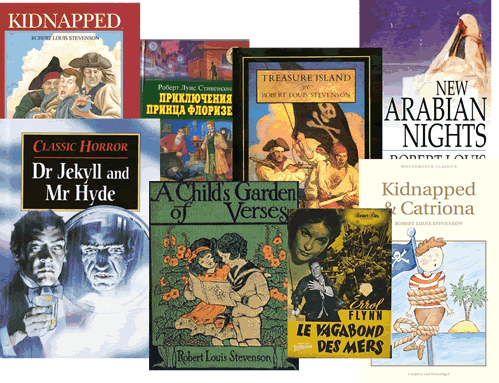

RLS-athon
The first RLS-athon took place on 9 Nov 2015 at Edinburgh Centre for Carbon Innovation, Edinburgh, Scotland.
The aim was to build upon the Robert Louis Stevenson base r-ball, and use the Master of Ballantrae base r-ball.
Online registration is closed.
RLS Day is 13 Nov 2015.
- Preparation
- Outline
- Presentations
- Scope
- Special topics
- Where to find MARC21 data for RLS resources
- Where to find RLS resources
- Announcements, blogs, etc.
- Greetings: From Maurice to Robert
- Outcomes
- Photos
Preparation
- 27 Oct 2015 (1-3 pm UK; 9-11 am EDT): RIMMF training webinar. Further details were sent to attendees.
Outline
- 10:30 Introductions, Outline of the Day, and Setup
- 10.45 Brief review of RIMMF functionality
- 11.15 RLS-athon
- 13.00 Lunch
- 14.00 Workshop on "national interests"
- Presentations and participation on specific aspects of RDA and digitization, data quality improvement, and access to cultural heritage. Gordon Dunsire, Chair of the RDA Steering Committee, and colleagues discuss lessons learned during experiments with linked data, RDA, and RIMMF in national libraries.
- 15:00 Discussion on issues for RDA, RIMMF, and linked data
- What issues arose during the RLS-athon? What strengths and weaknesses of RDA were revealed? How does this fit with linked data initiatives such as BibFrame and Dublin Core? An opportunity for informal discussion with members of the RDA Steering Committee, developers of RIMMF, and linked data experts.
- 16:00 End
- Informal discussion
Presentations
Scope
- the works of Robert Louis Stevenson
- including The Master of Ballantrae
- in single or multiple expressions (e.g., editions, languages, with illustrations or without, with notes or reader's guides or without, etc.)
- Carried:
- in unmediated volumes
- in audio discs, cassettes, or online
- in computer discs, or online resources
Special topics
These topics are the focus of one or more collaborative teams/tables during the RIMMFing session. Each team has an expert leader, or access to a roving expert coach.
It is not necessary to bring copies or notes of information taken from a local resource in hand, although that is always welcome, because there are many readily available online digitized versions, especially of early English editions of Stevenson's works.
- Pirates! A focus on Treasure Island in print and digital formats, including translations, e-texts, and audio books. Team members are encouraged to wear pirate gear, for example striped shirts, cut-off jeans, parrots, etc. This topic is recommended for those new to RDA and RIMMF.
- The Scottish book sculptures, and especially Treasure Island. More pirates, but poetry too, and an unusual cataloguing challenge.
- Scots! A focus on Kidnapped, Catriona, and The Master of Ballantrae. The Master of Ballantrae base r-ball provides examples of RDA applied to multiple digitized versions of multiple editions of a single Work. It exposes a number of issues relating to mass digitization strategies and the utility of RDA in resolving them. Team members are encouraged to wear tartan, kilts, heather, etc. This topic is suitable for those with some knowledge of RDA or digital formats, including JPEG, PDF, DAISY, Kindle, etc.
- National collections. A focus on RDA for RLS as a national figure. The National Library of Scotland is experimenting with RIMMF to apply the benefits of RDA in bringing together the metadata for its format-based collections, including manuscripts, sound and film recordings, print, and digital. This raises issues of identity and authority, legacy data, and strategies for the future, as well as exposing areas for RDA and RIMMF development.
- Rare materials and RDA. This topic is associated with the international seminar on RDA and rare materials on 6 Nov 2015, and uses RIMMF to discuss the issues raised.
- MARC in, MARC out. A focus on RIMMF as a metadata FRBRization and quality improvement tool. RIMMF can import a MARC 21 record and automatically FRBRize it into RDA Work, Expression, and Manifestation data. RIMMF can also export a MARC 21 record from RDA data. This team will use RIMMF to discuss the opportunities afforded by digitization projects to improve legacy data in legacy systems, while future-proofing it for RDA and linked data systems.
Where to find MARC21 data for RLS resources
These are online databases of downloadable MARC21 records:
- National Library of Scotland main catalogue: Robert Louis Stevenson
- Library of Congress Bibliographic and Name Authority files
- For direct download use the RIMMF Search and retrieve options.
- Cornell University Library Catalog: Robert Louis Stevenson
- Katalog der Deutschen Nationalbibliothek: Robert Louis Stevenson
- Trinity College Dublin Library Catalogue
Where to find online RLS resources
These are online databases of RLS related resources:
- Hathi Trust Digital Library: Robert Louis Stevenson
- Librivox : Acoustical liberation of books in the public domain: Robert Louis Stevenson
- Open Library: Robert Louis Stevenson
- Project Gutenberg: Robert Louis Stevenson
- Tusitala Philatelica: RLS on stamps
Announcements, blogs, etc.
Greetings from Maurice to Robert
The Maurice Dance sent greetings to the RLS-athon in a card from Maurice (Gee) to Robert (Louis Stevenson).
Transcription
Robert
Have a great day on November 9. Enclosed a little sustenance for the coaches as a reminder of your time in the South Seas (hope the Pirates don't capture it en route!)
Best wishes
Maurice
Outcomes
The RLS-athon was attended by 32 delegates and 7 coaches and leaders from 15 organisations in Denmark, England, France, Scotland, The Netherlands, and USA.
Delegates added over 120 entities to the RLS base r-ball.
Photos
{kind=link}
Getting ready to RIMMF
Rimmfing away
{kind=link}
{kind=link}
